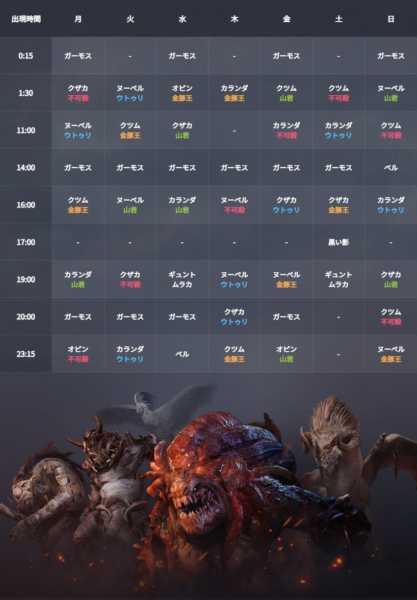

Black Desert Boss Timer
ボス出現タイマー
--
--:--:--
次の対象ボス
--
チェックされたボスから次回予定を計算します。
--
--:--:--
アラーム有効化
音量テスト
アラーム停止
設定リセット
設定コピー
音量
60%
アラーム音
ベル
チャイム
警告
リマインダー
ストップまで
通知も使う
音声: 未有効
通知: 未確認
次回通知: --
逃し通知: なし
設定
通知タイミング
--
今日の予定
--
明日以降
--
次に鳴るアラーム
--
アラーム履歴
履歴クリア
元の表を見る

参照元:
公式Wiki ワールドボス